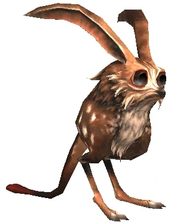
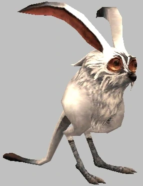
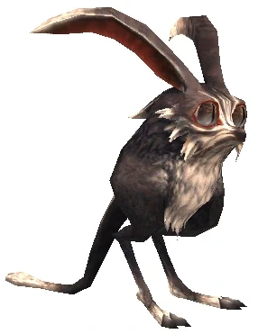

Level 75 reference · Zenith rules
|
Rabbits
 Image source Image source Image sourceRabbits are known for their relatively inexpensive drops, and are therefore often used by inexperienced leathercrafters and cooks alike to hone their skills. Newer leathercrafters stack up on hides to make a number of simple items such as Rabbit Mantles. Similarly, younger cooks have pantries full of meat, although tougher and cheaper than other meat, in order to prepare simple foods such as Grilled Hare and practice their technique. Even beginning alchemists get into the mix by using hides to make Animal Glue. There are, however, some advanced uses for these items. In leathercraft, for example, the Nomad's Mantle is a staple for any adventurer's wardrobe. In cooking, Rarab Meatball packs a powerful punch, as does the Windurst Taco. Every once in a while you may even find a turnip or carrot that the rabbit was saving for a snack. |
Family Information
|


Special Attacks
| Special Abilities | Original and Zilart Areas | Promathia Areas | Wings of the Goddess Areas | |
| Foot Kick - Single target physical damage. | Check |
Check |
Check | |
| Whirl Claws - AoE physical damage. | Check |
Check |
Check | |
| Dust Cloud - Cone AoE damage and Blind. | Check |
Check |
Check | |
Snow Cloud - Cone AoE damage and Paralyze.
|
X |
Check |
X | |
| Wild Carrot - Self heal. | X |
Check |
||
| Note: Notorious Monsters in this family may use all of the above and/or additional unique special abilities. | ||||

Notorious Monsters in Family
| Name | Spawn Information | Level | Zone | Notable Drop(s) |
|---|---|---|---|---|
| Black Coney | Forced Spawn by trading a San d'Orian Carrot to a Rabbit Footprint in Uleguerand Range during the new moon | 70-72 | Uleguerand Range | Selene's Bow |
| Jaggedy-Eared Jack | Lottery Spawn from Forest Hares around (G-9) - (H-9) | 9-10 | West Ronfaure | Rabbit Charm |
| Sharp-Eared Ropipi | Lottery Spawn from the Savanna Rarab around (J-7), (J-10), and (J-11) | 10 | East Sarutabaruta | Entrancing Ribbon |
| Unut | Lottery Spawn from the Moss Eaters around (E-5) - (F-6) on the first map | 72 | Boyahda Tree | Luna Subligar |
| White Coney | Forced Spawn by trading a San d'Orian Carrot to a Rabbit Footprint in Uleguerand Range during the full moon | 70-72 | Uleguerand Range | Selene's Bow |
|
Quest NMs: Maat's Pet Mission NMs: Coney, Shikaree X's Rabbit Battlefield NMs: Bearclaw Leveret (ENM), Bearclaw Rabbit (ENM), Cottontail (BCNM), Helltail Harry, (BCNM) Other NMs: Nightmare Bunny (Limbus) | ||||
Monsters in Family
| Name | Level | Zone |
|---|---|---|
| Wild Rabbit | 0 | East Ronfaure West Ronfaure |
| Forest Hare | 1-5 | East Ronfaure West Ronfaure |
| Savanna Rarab | 1-6 | West Sarutabaruta East Sarutabaruta |
| Pit Hare | 2-6 | Palborough Mines |
| Hoarder Hare | 6-8 | Dangruf Wadi |
| Canyon Rarab | 7-10 | Tahrongi Canyon |
| Steppe Hare | 7-10 | La Theine Plateau |
| Rabid Rat | 11-13 | Palborough Mines |
| Wadi Hare | 11-14 | Dangruf Wadi |
| Bog Bunny | 13-16 | Pashhow Marshlands |
| Mighty Rarab | 15-18 | Buburimu Peninsula |
| Sand Hare | 15-18 | Valkurm Dunes |
| Blood Bunny | 17-19 | Ordelle's Caves |
| Vorpal Bunny | 23-26 | Ordelle's Caves |
| Island Rarab | 34-38 | Bibiki Bay |
| Variable Hare | 58-61 | Uleguerand Range |
| Beach Bunny | 62-65 | Cape Teriggan |
| Polar Hare | 65-68 | Uleguerand Range |
| Moss Eater | 62-66 | Boyahda Tree |
| Tropical Rarab | 73-76 | Bibiki Bay |
Adapted from Eden Wiki: Category:Rabbits · Contributors and history · CC BY-SA 4.0. Revision 2282. Layout, links and optional background text adapted for Zenith.
Articles
- Beach Bunny
- Black Coney
- Blood Bunny
- Bog Bunny
- Canyon Rarab
- Coney
- Cottontail
- Forest Hare
- Goblin's Rarab
- Helltail Harry
- Hoarder Hare
- Island Rarab
- Jaggedy-Eared Jack
- Maat's Pet
- Mighty Rarab
- Moss Eater
- Pit Hare
- Polar Hare
- Rabid Rat
- Sand Hare
- Savanna Rarab
- Sharp-Eared Ropipi
- Steppe Hare
- Tropical Rarab
- Unut
- Variable Hare
- Vorpal Bunny
- Wadi Hare
- White Coney
- Wild Rabbit